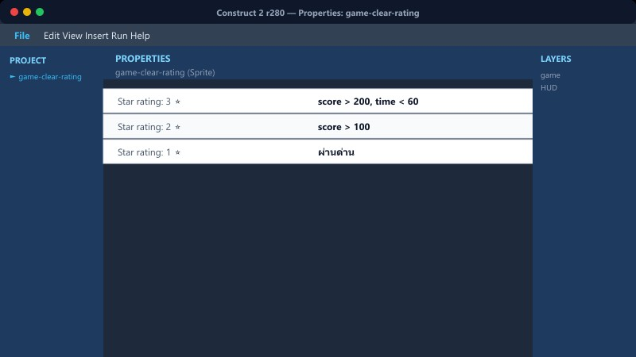
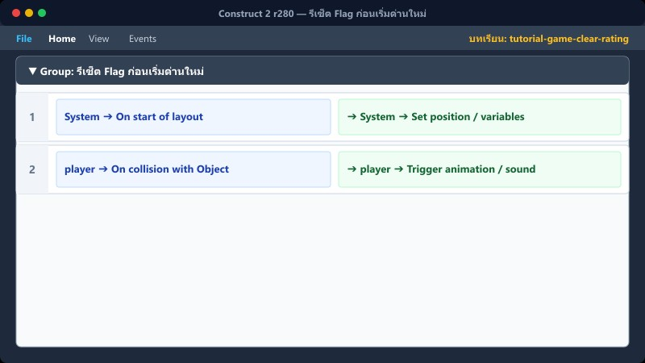
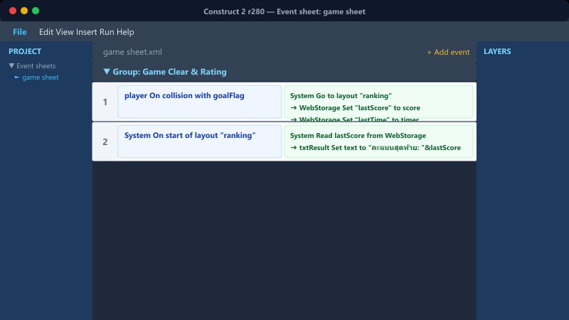

บทที่ 15 • สรุปผลการเรียนรู้
ฉากสรุปผลและเกียรติบัตรในเกม
คำนวณดาวประเมิน (1–3 ดาว) → สรุปคะแนนรวมและชื่อนักเรียน → แสดงเกียรติบัตรจำลองในเกม
🏆 ประกาศนียบัตรผ่านการทดสอบคณิตศาสตร์ 🏆
ขอมอบให้แก่: เด็กชาย / เด็กหญิง [ชื่อผู้เล่น]
⭐ ⭐ ⭐
คะแนนรวมสุทธิ: 4,850 คะแนน
ผ่านด่านทั้งหมด→คำนวณดาว→แสดงเกียรติบัตร→แสดงชื่อ/คะแนน→ปุ่มเล่นใหม่
1ระบบ Top 5 Ranking
สร้าง Variables ชื่อ1-5 และ คะแนน1-5
เตรียมตัวแปรชื่อและคะแนน 5 อันดับสำหรับเก็บกระดานผู้นำ
📍 ที่ไหนใน C2: ranking sheet
2เงื่อนไขการแทรกคะแนน
ตรวจว่าคะแนนใหม่ทำลายสถิติใด
คะแนน > คะแนน1 → เลื่อนอันดับ 1 ไป 2, 2 ไป 3, ... แทรกที่ 1
Else If คะแนน > คะแนน2 → แทรกที่ 2
... จนถึงอันดับ 5
📍 ที่ไหนใน C2: กลุ่ม "บันทึกอันดับ Top5"
3การ Shift ข้อมูล (เลื่อนอันดับ)

ระวังลำดับการเขียน Event!
Set คะแนน5 = คะแนน4, ชื่อ5 = ชื่อ4
Set คะแนน4 = คะแนน3, ชื่อ4 = ชื่อ3
... ต้องทำจากล่างขึ้นบน ไม่เช่นนั้นข้อมูลจะถูกทับทั้งหมด!
📍 ที่ไหนใน C2: กลุ่ม "บันทึกอันดับ Top5"
4รีเซ็ต Flag ก่อนเริ่มด่านใหม่

ให้พร้อมบันทึกคะแนนในรอบหน้า
System → On start of layout (game)
Set บันทึกอันดับ = 0
📍 ที่ไหนใน C2: game sheet
5แสดงผล Ranking Board

แสดงชื่อและคะแนน
rank_line1 → Set text to ชื่อ1 & " - " & คะแนน1
rank_line2 → Set text to ชื่อ2 & " - " & คะแนน2
📍 ที่ไหนใน C2: ranking sheet
6⚠️ ข้อผิดพลาดที่พบบ่อย

คะแนนถูกบันทึกซ้ำหลายครั้งตอนจบด่าน
สาเหตุ: ลืมใช้ Flag ควบคุม หรือรีเซ็ตผิดที่
วิธีแก้: ใช้ บันทึกอันดับ = 1 เป็น Trigger once และรีเซ็ต บันทึกอันดับ = 0 ตอนเข้าด่านใหม่เสมอ
📍 ที่ไหนใน C2: กลุ่ม "บันทึกอันดับ Top5"